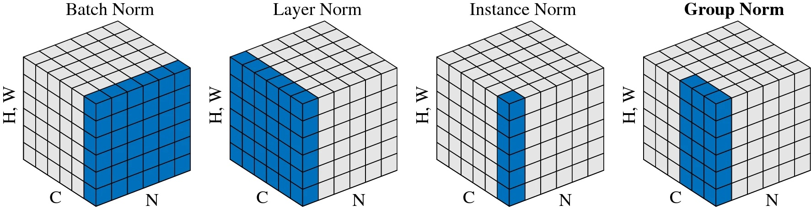

Neural Networks (Fragments)
Why Deep
- early layers learn to represent lower features (images: edges, audio: sounds, …), deeper layers learn concepts (shapes, eyes, faces or phonemes, words, sentences)
- neuroscientist inspiration
- circuit theory: computable functions, e.g. parity \((x_1, ... , x_n)\) = x_1 XOR x_2 .. XOR x_n$ need \(O(log n)\) neurons in multiple layers, or \(O(2^n)\) in a single layer (exponential)
Dimesnion Counting & Convertions
| Aspect | Textbook / Theory (Samples as Columns) | TensorFlow / PyTorch (Batch-First, transposed definition) |
|---|---|---|
| Activations \(A^{(l-1)}\) | \(A^{(l-1)} \in \mathbb{R}^{m \times n}\) | \(A^{(l-1)} \in \mathbb{R}^{n \times m}\) |
| Weights \(W^{(l)}\) | \(W^{(l)} \in \mathbb{R}^{k \times m}\) | \(W^{(l)} \in \mathbb{R}^{m \times k}\) |
| Bias \(b^{(l)}\) | \(b^{(l)} \in \mathbb{R}^{k \times 1}\) | \(b^{(l)} \in \mathbb{R}^{1 \times k}\) (broadcast) |
| Pre-activation \(Z^{(l)}\) | \(Z^{(l)} = W^{(l)} A^{(l-1)} + b^{(l)}\) | \(Z^{(l)} = A^{(l-1)} W^{(l)} + b^{(l)}\) |
| Output \(Z^{(l)}\) | \(Z^{(l)} \in \mathbb{R}^{k \times n}\) | \(Z^{(l)} \in \mathbb{R}^{n \times k}\) |
| Sample orientation | Each column = 1 sample | Each row = 1 sample |
| Typical in | Math, statistics, early ML literature | TensorFlow, PyTorch, NumPy, GPU computation |
Dense Nueral Networks (MLP)
Generic equation for forward propagation @ layer \(l\):
\(x=a^0\) (input layer), \(\hat y = a^L\) (output layer)
Forward: a^{l-1} a^l$
\[ \begin{aligned} z^l &= W^l a^{l-1} + b^l \\ a^l &= g(z^l) \end{aligned} \] - cache \(z^l\)
Backward: da^l a^{l-1}$
\[ \begin{aligned} dz^{l} &= da^{l} * g'(z^l)\\ dW^l &= dz^l {a^{l-1}}^T \\ db^l &= \sum dz^l\\ da^{l-1} &= {W^{l}}^T dz^l \end{aligned} \]
- cache: dW^l, db^l
\(\boxed{\,dZ^{[l]} \;=\; dA^{[l]} \;\odot\; g^{[l]\,'}(Z^{[l]})\,} \qquad (n_l\times m)\)
\[ \begin{aligned} D^{[l]} &= \frac{\partial J}{\partial Z^{[l]}} = \frac{\partial J}{\partial A^{[l]}} \odot g^{[l]\,'}(Z^{[l]}) \quad & (n_l \times m) \\ dW^{[l]} &= \frac{\partial J}{\partial W^{[l]}} = \frac{1}{m}\, D^{[l]} (A^{[l-1]})^\top \quad & (n_l \times n_{l-1}) \\ db^{[l]} &= \frac{\partial J}{\partial b^{[l]}} = \frac{1}{m}\, D^{[l]} \mathbf{1}_m \quad & (n_l \times 1) \\ dA^{[l-1]} &= \frac{\partial J}{\partial A^{[l-1]}} = (W^{[l]})^\top D^{[l]} \quad & (n_{l-1} \times m) \end{aligned} \]
A short history of NN
!!!! Double-check !!!!
| Year | Task Type | Tool / Model | Company / Author(s) | Architecture / Highlights | Publication / Link | Citations (approx.) | Parameters |
|---|---|---|---|---|---|---|---|
| 1997 | Sequence Modeling (RNN) | LSTM | Hochreiter & Schmidhuber | Gated RNN with Constant Error Carousel | Neural Computation (1997) | 130,000 | ? |
| 2013 | Generative Modeling | VAE | Kingma & Welling | Probabilistic autoencoder with latent space | arXiv (2013) | 47,000 | ? |
| 2014 | Image Classification | VGG-16 | Simonyan & Zisserman (Oxford) | Deep ConvNet (16 layers) | arXiv (2014) | — | 138M |
| 2015 | Image Classification | ResNet-50 | He et al. (Microsoft) | Residual CNN (skip connections) | arXiv (2015) | 280,000 | ? |
| 2017 | Text-to-Speech (TTS) | Tacotron 2 | Seq2Seq + attention + vocoder | Tacotron 2 (2017) | 2,500 | ? | |
| 2019 | Text Classification | BERT | Bidirectional Transformer (encoder) | ACL (2019) | 141,000 | 110M / 340M | |
| 2020 | Text Generation | GPT-3 | OpenAI | Decoder-only Transformer (autoregressive) | arXiv (2020) | 51,000 | 175B |
| 2020 | Translation (Text2Text) | T5 | Encoder–Decoder Transformer | T5 (2020) | 10,000 | 220M | |
| 2020 | Image Classification | ViT | Transformer over patch embeddings | ViT (2020) | 6,000 | 86M | |
| 2020 | Object Detection | DETR | Meta (Facebook) | Transformer + CNN backbone | DETR (2020) | 2,000 | ? |
| 2021 | Image Generation | DALL·E | OpenAI | Transformer + discrete VAE + CLIP | OpenAI (2021) | — | 12B |
| 2021 | Image Segmentation | SegFormer | Nvidia | Transformer-based segmentation architecture | SegFormer (2021) | 500 | ? |
| 2022 | Speech-to-Text (ASR) | Whisper | OpenAI | Transformer-based seq2seq with CTC | Whisper (2022) | 5,700 | ? |
| 2022 | Image-to-Text (Caption) | BLIP | Salesforce | Vision–language encoder–decoder | BLIP (2022) | 300 | ? |
| 2022 | Video Generation | Imagen Video | Google Research | Cascade of video diffusion models with super-resolution | Imagen Video (2022) | — | ? |
| 2023 | Video Generation | VideoPoet | Google Research | Decoder-only autoregressive Transformer (multimodal) | VideoPoet (2023) | — | ? |
| 2024 | Video Generation | Veo 2 | Google DeepMind | 4K, cinematographic control, improved physics | Veo 2 (2024) | — | ? |
| 2025 | Video Generation | Veo 3 | Google DeepMind | Adds synchronized audio (dialogue, SFX, ambience) | Veo 3 (2025) | — | ? |
Trends
- more parameters
- academic \(\to\) industry
- open \(\to\) closed
- papers \(\to\) money
- multi-modal
Loss function
- the objective of neural network
Initialistion
different initialization can lead to different (local) optima in non-convex landscapes
avoid vanishing/exploding gradients
Xavier Initialization (for tanh): \(Var(w) = 1/n\)
Kaiming Initialization (for ReLU); \(Var(w) = 2/n\)
Activations Functions
Aim: introduce non-linearity Problem: saturation and vanishing gradients –> no learning ### tanh
- zero-centered
ReLU
Softmax:
- interprete output as prob with $\sum p_i = 1$
- sees all neurons
- log-sum trick
$$
\log\sum_i e^{x_i} = x^\ast + \log \sum_i e^{x_i - x^\ast}
$$Summary
| Activation Function | Typical Use | Advantages | Disadvantages |
|---|---|---|---|
| Sigmoid | Binary classification output (logistic regression); hidden units (rarely used now) | - Smooth output between 0 and 1 - Interpretable as probability |
- Vanishing gradients - Saturates at extremes - Not zero-centered |
| Tanh | Hidden units in older networks; similar to sigmoid but zero-centered | - Outputs between -1 and 1 - Zero-centered |
- Still suffers from vanishing gradients - Saturates for large inputs |
| ReLU | Default for hidden layers | - Computationally efficient - Avoids vanishing gradients for positive inputs - Sparse activations |
- “Dying ReLU” problem: neurons can output 0 permanently - Not zero-centered |
| Leaky ReLU | Hidden layers (especially when ReLU is too brittle) | - Fixes dying ReLU by allowing small gradient when input < 0 | - Slope for negative part is a hyperparameter - Still not zero-centered |
| Softmax | Output layer for multi-class classification | - Converts raw scores to probabilities - Highlights strongest class |
- Not useful for hidden layers - Sensitive to outliers - Can be numerically unstable (requires log-sum-exp trick) |
Data Preprocessing
- splitting
- transformation & normalization
Data Augmentation
- embedd into ML workflow
- identify symmetries (invariances): shift, rotate, scale, crop, brightness
- augment only training data
- augment all samples of the training data in same proportions
Regualarization
L2 regularization
\[ \theta_{k+1} = \theta_k - \epsilon \nabla_\theta f(\theta_k) - \lambda \theta_k \]
- penalizes large parameters
- favors more even distribution
- improves generalization, every neuron contributes
weight decay
\[ \theta_{k+1} = (1-\lambda) \theta_k - \alpha \nabla_\theta f(\theta_k) \]
looks equivalent to L2 norm (for GD), but not for Adam optimizer (momentum) ### data augmentation
Early stopping
bagging and ensemble methods
- massive effort for marginal gains (1-2%)
- ensemble: train \(k\) different models and pool/average
- bagging: use \(k\) different data sets
- quantify uncertainty
Dropout
- disable random set of neurons temporarily (20-50%)
- ensemble of smaller network within a big one
- reduced network capacity; makes it harder to optimize/minimize loss -> increase training time
- force all neurons to act –> creates robustness
- redundant representations
- human neurons are not reliable!
- model.train vs model.eval –> normalize differently
- Monte-Carlo dropout also at inference (p=0.1 - 0.2) run inference multiple times to put confidence estimates on final layer and interpret softmax really probabilistically
- reliable AI: important for doctors
\[ z = x. \theta^T \to E_{train}[z] = p E_{test}[z] \]
Batch Norm
- bring activations closer to 0
- c.f normalizing input layer (feature normalization)
- from the perspective of a deep layer it’s inputs a changing all the time (while learning) - keep their mean and variance stable (“covariate shift”) –> speeds up learning
- side effect: batch norm also adds a little noise while estimating \(\mu, \sigma^2\) from mini-batch -> regualrization (c.f dropout)
- a test time: which \(\mu\), \(\sigma\) to use? exp. weighted (running) average across minimataches Given \(z [n_l, m]\) for some layer \(l\) and batch size \(m\) \[ \begin{aligned} \mu_i &= \frac{1}{m} \sum_j z_{ij} \\ \sigma_i^2 &= \frac{1}{m} \sum_j (\mu - z_{ij})^2 \\ z^{norm}_{ij} &= (z_{ij} - \mu_i) / \sqrt{\sigma^2_i + \epsilon} \\ \tilde{z}_{ij} &= \gamma z^{norm}_{ij} + \beta \end{aligned} \]
Other norms

Interpreting Loss curves
–> Andrew NG
Key Challenges
- Finding Optimal Solutions
- Vanishing/Exploding Gradients
- Overfitting
When comparing model performance, compare data + data processing + optimization strategy + model